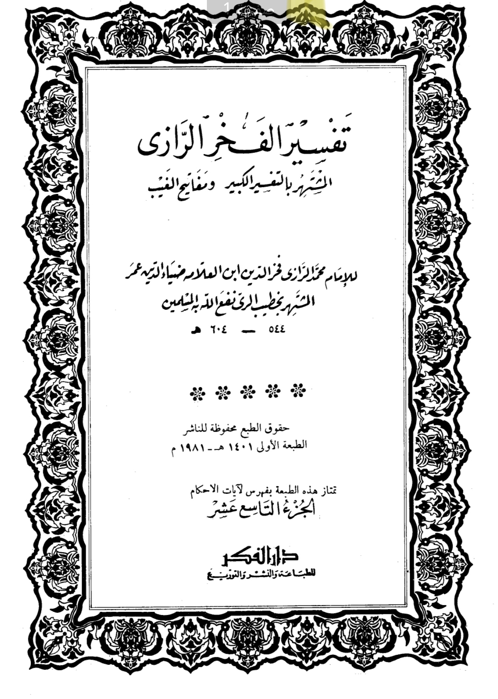
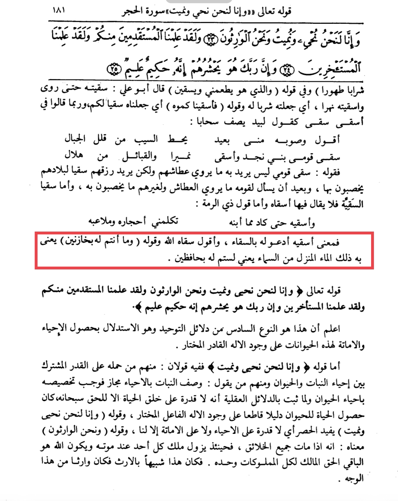

Many claim it is an error cause we can preserve water preserved in dams
Al-Razy states in his tafsir of this verse (19/181): “this verse means you can’t preserve
this water that comes down from the sky”


So it is talking about rain not like dams and stuff
"And it is not you who are the owners of its supply. The meaning is, "You are not taking care of it;
rather We send it down and take care of it for you, making springs and wells flourish on the earth. "
If Allah so willed, He could make it disappear, but by His mercy He sends it down and makes it fresh
and sweet, maintaining the springs, wells, rivers and so on, so that they may drink from it all year long,
water their livestock and irrigate their crops." - Ibn Kathir
This is talking about natural water in the ecosystems essentially, the context is about rainfall and
replenishing natural water sources.